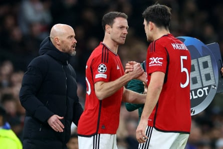

Jonny Evans has announced his retirement after a 19-year playing career and been appointed head of loans and pathways at Manchester United .
The 37-year-old Evans played 241 times across two spells for United, claiming three Premier League titles, the Champions League, the FA Cup and two League Cups, and was capped 107 times by Northern Ireland . In total he made 536 appearances for five clubs, also winning the FA Cup with Leicester City.
Evans said: “I want to officially announce my retirement, not with sadness, but with pride, gratitude and excitement for the next chapter ahead. I’ll be for ever indebted to the managers, coaches, staff and, of course, my teammates, that I have had the privilege of working alongside throughout my 20 years in professional football.
“My biggest and most heartfelt thanks must go to the fans who have supported me during every step of the journey. It’s been an honour to be on the pitch and feel your passion home and away. I will be eternally grateful for every ounce of support.
“I am looking forward to working with the next generation of talented players to support them to reach their potential. Having had experience of loans myself, I know the crucial role that they can play within a player’s development. I am excited to help further develop the pathway to our first team and continue the legacy of young players thriving at Manchester United.”
Jonny Evans had two spells at Manchester United, and played for five clubs, as well as earning 107 caps for Northern Ireland.Photograph: Carl Recine/Reuters
Evans’s senior debut came as a United academy player for Northern Ireland in a 3-2 win against Spain on 6 September 2006, and he was loaned to Royal Antwerp and Sunderland that season. His United debut came on 26 September 2007, in a 2-0 League Cup defeat at home against Coventry, before he was loaned again to Sunderland in January 2008. Evans’s Premier League debut was for Sunderland in a 2-0 home win against Portsmouth later that month.
After returning to United the next season, Evans spent seven years there before being sold to West Brom for £6m in August 2015. A £3.5m transfer to Leicester followed in 2018 before he returned to United on a free in summer 2023.
As United’s head of loans and pathways, Evans’s role includes working closely with the director of football, Jason Wilcox, and the academy director.
Wilcox said: “Having just finished his exceptional playing career, Jonny is the perfect role model for our young players. Jonny’s knowledge of what it takes to succeed at Manchester United will be of great benefit to each of them as we continue to develop world-class talent capable of performing in our first team.”